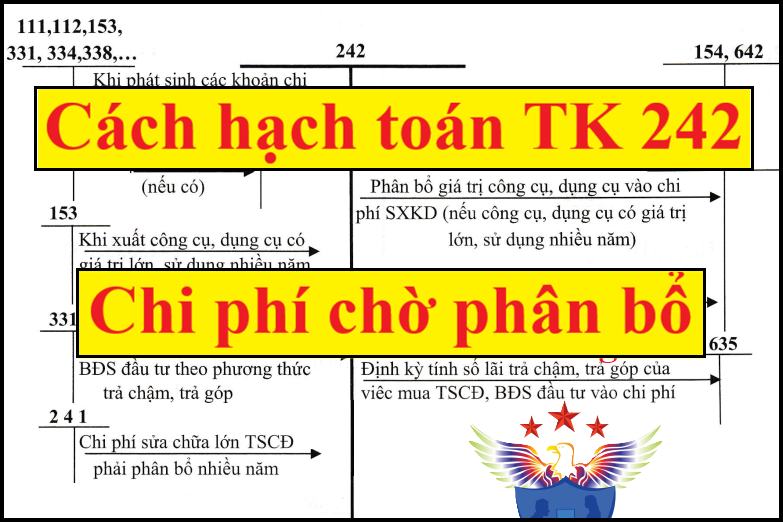

Hướng dẫn cách hạch toán chi phí chờ phân bổ - Tài khoản 242 áp dụng chế độ kế toán theo Thông tư 99/2025/TT-BTC mới nhất 2026, hạch toán chi phí thuê nhà, văn phòng, mua bảo hiểm công cụ dụng cụ dùng trong nhiều kỳ kế toán, chi phí sửa chữa bảo dưỡng Tài sản cố định ...
1. Tài khoản 242 - Chi phí chờ phân bổ
Nguyên tắc kế toán
a) Tài khoản này dùng để phản ánh các chi phí thực tế đã phát sinh (bao gồm các chi phí đã trả tiền trước và các chi phí chưa trả tiền trước) nhưng có liên quan đến kết quả hoạt động SXKD của nhiều kỳ kế toán và việc phân bổ các khoản chi phí này vào chi phí SXKD của các kỳ kế toán sau.
b) Các nội dung được phản ánh là chi phí chờ phân bổ, bao gồm:
- Chi phí về thuê cơ sở hạ tầng, thuê hoạt động TSCĐ đã phát sinh (quyền sử dụng đất, nhà xưởng, kho bãi, văn phòng làm việc, cửa hàng và TSCĐ khác) phục vụ cho sản xuất, kinh doanh nhiều kỳ kế toán.
- Chi phí mua bảo hiểm (bảo hiểm cháy, nổ, bảo hiểm trách nhiệm dân sự chủ phương tiện vận tải, bảo hiểm thân xe, bảo hiểm tài sản,...) và các khoản chi mà doanh nghiệp đã trả một lần cho nhiều kỳ kế toán;
- Công cụ, dụng cụ, bao bì luân chuyển, đồ dùng cho thuê liên quan đến hoạt động kinh doanh trong nhiều kỳ kế toán;
- Chi phí sửa chữa, bảo dưỡng định kỳ TSCĐ liên quan đến hoạt động kinh doanh trong nhiều kỳ kế toán;
- Số chênh lệch giá bán nhỏ hơn giá trị còn lại của TSCĐ bán và thuê lại là thuê tài chính;
- Số chênh lệch giá bán nhỏ hơn giá trị hợp lý của TSCĐ bán và thuê lại là thuê hoạt động;
- Lợi thế thương mại phát sinh từ việc hợp nhất kinh doanh không hình thành công ty mẹ - công ty con (mua tài sản thuần), trừ trường hợp hợp nhất kinh doanh dưới sự kiểm soát chung;
- Các khoản chi phí chờ phân bổ khác không thỏa mãn điều kiện là TSCĐ, ví dụ như các chi phí khác phát sinh liên quan đến nhiều kỳ, tiền đọc tài liệu khai thác tài nguyên, khoáng sản,...
c) Việc tính và phân bổ chi phí chờ phân bổ vào chi phí SXKD từng kỳ doanh nghiệp phải căn cứ vào tính chất, mức độ từng loại chi phí để lựa chọn phương pháp và tiêu thức phân bổ cho phù hợp. Ví dụ, đối với chi phí sửa chữa, bảo dưỡng định kỳ TSCĐ liên quan đến nhiều kỳ kế toán thì thời gian phân bổ dự kiến có thể tính từ khi TSCĐ được sửa chữa bảo dưỡng hoàn thành, đưa vào sử dụng cho đến lần cần sửa chữa, bảo dưỡng định kỳ sau hoặc đối với công cụ, dụng cụ, bao bì luân chuyển, đồ dùng cho thuê liên quan đến hoạt động kinh doanh trong nhiều kỳ kế toán thì thời gian phân bổ có thể là thời gian dự kiến sử dụng hữu ích của công cụ dụng cụ, bao bì luân chuyển hoặc đồ dùng cho thuê,...
d) Doanh nghiệp phải theo dõi chi tiết từng khoản chi phí chờ phân bổ theo từng kỳ hạn, số đã phát sinh, số đã phân bổ vào các đối tượng chịu chi phí của từng kỳ kế toán và số còn lại chưa phân bổ vào chi phí.
2. Kết cấu và nội dung phản ánh Tài khoản 242.
|
Bên Nợ |
Bên Có |
|
Các khoản chi phí chờ phân bổ phát sinh trong kỳ. |
Các khoản chi phí chờ phân bổ đã tính vào chi phí sản xuất, kinh doanh trong kỳ. |
|
Số dư bên Nợ: Các khoản chi phí chờ phân bổ chưa tính vào chi phí sản xuất, kinh doanh trong kỳ tại thời điểm kết thúc kỳ kế toán. |
3. Cách hạch toán Chi phí chờ phân bổ ở một số nghiệp vụ
|
a) Khi phát sinh các khoản chi phí phải phân bổ dần vào chi phí SXKD của nhiều kỳ, căn cứ vào chứng từ kế toán có liên quan, ghi: Nợ TK 242 - Chi phí chờ phân bổ Nợ TK 133 - Thuế GTGT được khấu trừ (nếu có) Có các TK 111, 112, 153, 331, 334, 338,... Định kỳ tiến hành phân bổ chi phí chờ phân bổ vào chi phí SXKD của từng kỳ, ghi: Nợ các TK 623, 627, 635, 641, 642,... Có TK 242 - Chi phí chờ phân bổ. b) Khi trả trước tiền thuê TSCĐ, thuê cơ sở hạ tầng theo phương thức thuê hoạt động và phục vụ hoạt động kinh doanh cho nhiều kỳ, ghi: Nợ TK 242 - Chi phí chờ phân bổ Nợ TK 133 - Thuế GTGT được khấu trừ (nếu có) Có các TK 111, 112,... Xem thêm: Cách hạch toán tiền đặt cọc c) Xuất dùng công cụ, dụng cụ, bao bì luân chuyển, đồ dùng cho thuê liên quan đến hoạt động sản xuất, kinh doanh trong nhiều kỳ, ghi: - Khi xuất dùng hoặc cho thuê, ghi: Nợ TK 242 - Chi phí chờ phân bổ Có TK 153 - Công cụ, dụng cụ. - Định kỳ, tiến hành phân bổ giá trị công cụ, dụng cụ, bao bì luân chuyển, đồ dùng cho thuê đã xuất kho theo tiêu thức hợp lý tùy theo đặc điểm hoạt động sản xuất kinh doanh và yêu cầu quản lý của doanh nghiệp, ví dụ thời gian sử dụng hoặc mức độ, khối lượng sản phẩm, dịch vụ mà công cụ, dụng cụ, bao bì luân chuyển, đồ dùng cho thuê tham gia vào hoạt động sản xuất, kinh doanh trong từng kỳ kế toán,... Khi phân bổ, ghi: Nợ các TK 623, 627, 641, 642,... Có TK 242 - Chi phí chờ phân bổ. Xem thêm: Cách tính phân bổ công cụ dụng cụ d) Trường hợp chi phí sửa chữa, bảo dưỡng định kỳ TSCĐ liên quan nhiều kỳ kế toán, khi công việc sửa chữa, bảo dưỡng định kỳ hoàn thành: - Kết chuyển chi phí sửa chữa, bảo dưỡng định kỳ TSCĐ vào tài khoản chi phí chờ phân bổ, ghi: Nợ TK 242 - Chi phí chờ phân bổ. Có TK 241 - XDCB dở dang (2413). - Định kỳ, tính và phân bổ chi phí sửa chữa, bảo dưỡng định kỳ TSCĐ vào chi phí sản xuất, kinh doanh trong từng kỳ, ghi: Nợ các TK 623, 627, 641, 642,... Có TK 242 - Chi phí chờ phân bổ. đ) Lợi thế thương mại phát sinh tại ngày mua đối với trường hợp hợp nhất kinh doanh không dẫn đến quan hệ công ty mẹ - công ty con (mua một hoạt động kinh doanh), trừ trường hợp hợp nhất kinh doanh dưới sự kiểm soát chung theo quy định: - Nếu việc mua, bán khi hợp nhất kinh doanh được bên mua thanh toán bằng tiền, hoặc các khoản tương đương tiền, ghi: Nợ các TK 131, 138, 152, 153, 155, 156, 211, 213, 217.... (theo giá trị hợp lý của các tài sản đã mua) Nợ TK 242 - Chi phí chờ phân bổ (chi tiết lợi thế thương mại) Có các TK 331, 3411, ... (theo giá trị hợp lý của các khoản nợ phải trả và nợ tiềm tàng phải gánh chịu) Có các TK 111, 112, 121 (số tiền hoặc các khoản tương đương tiền bên mua đã thanh toán). - Nếu việc mua, bán khi hợp nhất kinh doanh được thực hiện bằng việc bên mua phát hành cổ phiếu, ghi: Nợ các TK 131, 138, 152, 153, 155, 156, 211, 213, 217,... (theo giá trị hợp lý của các tài sản đã mua) Nợ TK 242 - Chi phí chờ phân bổ (chi tiết lợi thế thương mại) Nợ TK 4112 - Thặng dư vốn (giá phát hành nhỏ hơn mệnh giá) (nếu có) Có TK 4111 - Vốn góp của chủ sở hữu (theo mệnh giá) Có các TK 331, 3411... (theo giá trị hợp lý của các khoản nợ phải trả và nợ tiềm tàng phải gánh chịu) Có TK 4112 - Thặng dư vốn (giá phát hành lớn hơn mệnh giá) (nếu có). |
Xem thêm: Hạch toán chi phí lãi vay
Chúc bạn thành công! Kế toán Diệu Tâm thường xuyên khai giảng các lớp học thực hành kế toán thực tế: Dạy lập báo cáo tài chính, quyết toán thuế trực tiếp trên chứng từ thực tế
-----------------------------------------------------------
